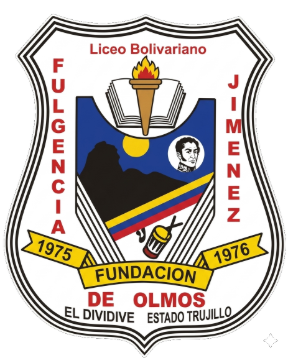

Constancia de Retiro
El suscrito, PROF. Persona de Prueba, portador de la Cédula de Identidad N°V-00000000 Director (E) del Liceo "Fulgencia Jiménez de Olmos", que funciona en la Población de El Dividive, final Av. Pueblo Viejo del Municipio Miranda Estado Trujillo en uso de sus atribuciones legales conferidas por la Ley y su reglamento, hace constar que (el) (la) Ciudadano (a): [Apellidos y Nombres del Estudiante], de edad [Edad], nacido en el [municipio] del estado [Estado] fue inscrito en esta institución como estudiante regular del [Año de Estudio] del nivel de Educación Media General correspondiente al Año Escolar [Año Escolar].
Su representante legal es (el) (la) Ciudadano (a): [Representante], titular de la Cédula de Identidad N° [Cedula del Representante].
El (la) estudiante fue retirado (a) de esta institución, en fecha [día] de [mes] de [año].
Constancia que se expide a petición del interesado(a) en la Urbanización Miranda, El Dividive a los [día] días del mes de [mes] del [año].